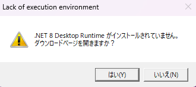
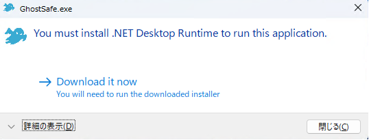
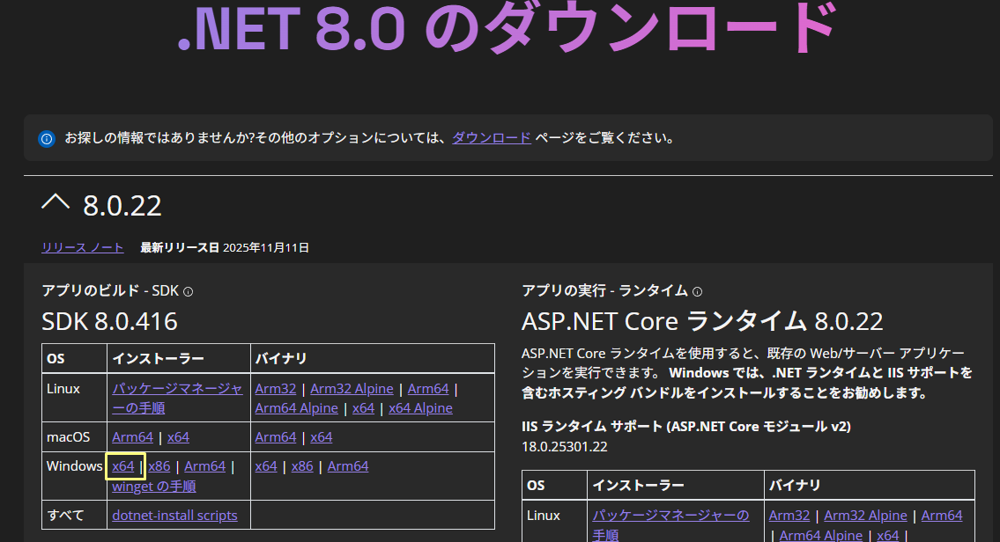
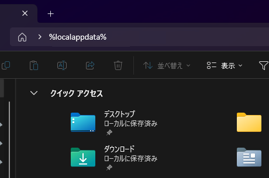
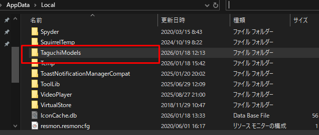

How to use GhostSafe
How to use GhostSafe
【ソフトの概要】
一言でメリットを伝えると、デジタル遺産を残さないためのソフトウェアです。
PCに保存している大切なファイルや家族にも見せたくない情報、誰にも知られたくないデータは、誰しもあるものです。
また、万が一ウィルスに感染した際、金融アカウント情報などを抜き取られると死活問題になります。
これらの情報を守る手段として、既存の暗号化ソフトを使えば保護できますが、大容量の動画やデータファイルの場合、暗号化・復号化に時間がかかり、閲覧や編集のたびに操作が面倒です。
そこで開発したのが本ソフトウェアです。本ソフトを使えば、1ギガバイトを超えるような大容量ファイルでも、数十秒で暗号化・復号化が完了します。
暗号化や復号化を意識せずに動画再生、静止画の表示、テキストファイルやExcelファイルの更新が可能です。
作業効率を落とさずに安全に管理できます。
【作者への連絡先】
taguchimodels@rakumail.jp
【取り扱い種別】
・完全フリーウェアです。
・Githubで自由にソースコードを変更して利用できます。
https://github.com/TaguchiModels/GhostSafe
【動作環境】
Windows 10 , Windows 11 64bit版
【インストール方法】
GhostSafe.zip をダウンロードしたら解凍します。
解凍した「win-x64」フォルダーにある GhostSafe.exe をダブルクリックしてください。
Windows のセキュリティ機能により警告が表示された場合は、表示内容をご確認の上、実行するかどうかをご判断ください。
本ソフトウェアは、Microsoft .Net8ランタイムを必要とします。
あなたのパソコンに Microsoft .Net8ランタイムがインストールされていない場合には、以下のメッセージが表示されます。

「はい」を選択するとDotNetインストールサイトがブラウザに表示されます。

Windows 欄の x64 をクリックするとダウンロードできます。

【アンインストール方法】
GhostSafe.zip を解凍したフォルダを削除してください。
レジストリには何も登録していません。
一時ファイルを削除するため、以下の文字列をコピーしてエクスブローラーに貼り付けて Enter を押してください。
%localappdata%

ここにある「TaguchiModels」フォルダを削除してください。

また、暗号化フォルダーについて必要がない場合は削除してください。
[暗号化フォルダーの場所]
初期値では"C\\Users\{User name}\AppData\Roming"の配下に作られます。
暗号化フォルダーの場所を変更されている場合には「設定」メニューからご確認ください。
アンインストールは以上です。
【具体的な操作方法】
具体的な操作方法はこちらを読んでください。
暗号化方式について興味があればこちらを読んでください。
■ 注意事項
・本ソフトの利用は自己責任でお願いします。
・本ソフトを利用したことによる損害について、作者は責任を負いません。